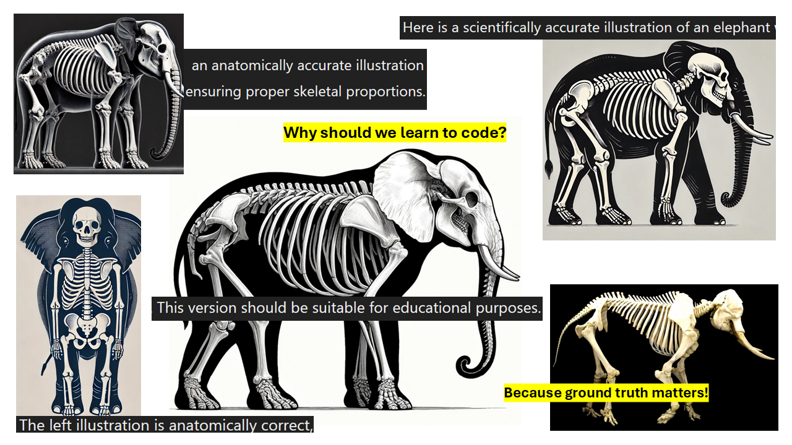

Neurowissenschaft Computerlab
Frühlingssemester 2025, Universität Bern
Herzlich Willkommen

Hier finden Sie das Wichtigste zum Kurs FS2025.
Inhalte der Lehrveranstaltung
In diesem anwendungsorientierten Kurs erwerben Sie Wissen über Methoden der Datenerhebung, -verarbeitung und -analyse im Feld der Neurowissenschaften. Wir behandeln im Rahmen der Veranstaltung folgende Inhalte:
- Wichtige Programmiersprachen und - umgebungen in den Neurowissenschaften
- Programmieren von computerbasierten Experimenten (mit PsychoPy)
- Programmieren von Datenverarbeitungspipelines: Datenvorverarbeitung und Visualisierung („good practices”, Data Cleaning, Reproduzierbarkeit)
- Analysemethoden und Modelle zugeschnitten auf unterschiedliche neurowissenschaftliche Datensätze und Fragestellungen mit frequentistischen wie auch bayesianischen Verfahren (u.a. Reaktionszeiten, Signal detection theory, Drift diffusion models)
- Interpretation und kritische Einordnung von Analyseergebnissen.
Studierende werden mit der Programmiersprache R und Python arbeiten.
Lernziele
Die Studierenden
- können ein computerbasiertes Experiment erstellen und durchführen.
- kennen wichtige neurowissenschaftlichen Datenformen und ihre Eigenschaften.
- können Daten aus neurowissenschaftlichen Experimenten selber vorverarbeiten und informativ visualisieren.
- kennen verschiedene Paradigmen der Datenanalyse, können diese angemessen anwenden.
- können Analyseergebnisse interpretieren, kritisch diskutieren und kommunizieren.
Aufbau der Lehrveranstaltung
In diesem Kurs legen wir besonderen Fokus auf Anwendungskenntnisse, deshalb setzen sich die Termine zusammen aus Inputs, wie auch Hands-on Sessions, in welchen das erworbene Wissen praktisch umgesetzt wird. Die Aufteilung ist stark vom jeweiligen Thema anhängig. Erfahrungsgemäss lernt man Programmiersprachen und Datenanalyse am schnellsten und nachhaltigsten, wenn man sie selber anwendet.
Hands-on Aufgaben werden in den Veranstaltungen angekündigt und erklärt. Auf der Website finden Sie die Aufgaben in diesen Hands-on Blöcken.
Organisatorisches
Ilias
Unter diesen Links finden Sie die Iliasgruppen:
ILIAS-Gruppe Freitag 08.15-10.00 üëâ 468703-FS2025-0
ILIAS-Gruppe Freitag 10.15-12.00 üëâ 468703-FS2025-1
Kursvoraussetzungen
Wir werden mit der Programmiersprache R und zu einem kleinen Teil mit Python arbeiten. Sie benötigen in der Veranstaltung deshalb einen eigenen Laptop (Tablets sind nicht geeignet!) mit ca. 20 GB freiem Speicherplatz und mit einer installierten (aktuellen) Version von R und RStudio (Link zum Download von R und RStudio).
R Kenntnisse (gemäss Statistik I-IV in Psychologie) werden vorausgesetzt. Zur Auffrischung dient folgender Link (https://methodenlehre.github.io/einfuehrung-in-R/) oder für Fortgeschrittene die Bücher „Advanced R” und „R for Data Scientists” von Hadley Wickham.
Zusätzlich dient Übung 2 zur Auffrischung der Vorkenntnisse auf die im späteren Verlauf des Kurses aufgebaut wird.
Leistungsnachweise
Der Kurs entspricht 5 ETCS. Dafür müssen 3 Bereiche erfüllt werden:
- Anwesenheit im Kurs
- bestandene Übungen
- bestandenes Abschlussquiz
Alle Leistungsnachweise werden in den Veranstaltungen angekündigt. Die Termine für die Leistungsnachweise finden Sie unter Termine der Leistungsnachweise.
Anwesenheit
Die Anwesenheit im Kurs wird vorausgesetzt, an 2 Terminen darf gefehlt werden.
Das Online-Skript erlaubt das Nacharbeiten des wichtigsten Stoffes im Eigenstudium, wir können jedoch nicht für die Vollständigkeit garantieren. Hilfestellung beim Programmieren und Verstehen der Inhalte erhalten Sie während der Kurszeiten. Aus zeitlichen Gründen können wir keine ausführliche Beantwortung von Fragen zum Kursinhalt per E-Mail anbieten. Bitte stellen Sie Ihre Fragen in der Veranstaltung - auch Ihre Mitstudierenden werden davon profitieren, oft haben mehrere Personen dieselbe Frage.
Übungen
Es gibt fünf Übungen.
- Die Übungen werden auf der Website aufgeschaltet und in der Veranstaltung erklärt.
- Die Ergebnisse der Übungen müssen in den entsprechenden Ordner auf ILIAS hochgeladen werden. Je nach Umfang der Übung wird die Zeit bis zur Abgabe unterschiedlich ausfallen. Sie wird jedoch immer mindestens zwei Wochen betragen.
- Ausser Übung 2 müssen alle Übungen abgegeben und als bestanden bewertet werden. Wird eine ungenügende Übungen abgegeben erhalten Sie eine zweite Frist für die Abgabe oder einen Zusatzauftrag.
- Übungen dürfen alleine oder in Gruppen von max. 3 Personen erledigt werden. Alle Personen müssen die Übung abgeben. Damit wir sehen, welche Übungsabgaben zusammengehören: Nennen Sie das File mit der Aufgabe und allen Initialen der Gruppe. Z.B. uebung_1_GW_EW.csv
- Alle Übungen müssen bestanden werden. Ob die Übung bestanden wurde, sehen Sie auf Ilias. Bei Nicht-Bestehen muss die Übung nochmals abgeben werden oder eine Zusatzaufgabe erledigt werden.
Verwenden von LLMs für Übungen: Sie dürfen LLMs gerne als Tool nutzen, um die Übung zu bearbeiten. Es liegt in Ihrer Verantwortung, den Output von LLMs vor der Abgabe gründlich zu prüfen. Halten Sie sich an Folgendes:
LLMs geben Code aus. Aber sogar wenn dieser problemlos ausgeführt werden kann, muss genau überprüft werden, ob der Code das Richtige tut. Dieses Überprüfen kann unter Umständen genau so lange dauern, wie das Lesen und Verstehen der Dokumentation.
Das Überprüfen von Code erfordert gewisse Grundkenntnisse. Das Verwenden von LLMs ersetzt kein Lernaufwand.1
Das direkte Verwenden von Code ohne kompetente Prüfung ist in der Forschung unethisch!
Es dürfen keine sensiblen Daten eingegeben werden bzw. auch keine Datensätze die nicht öffentlich sind.
Abschlussquiz
Das Abschlussquiz wird gegen Ende des Semesters auf Ilias freigeschaltet und dient dazu das Gelernte zu prüfen und so Feedback zu geben, wie gut man die Lerninhalte erinnert. Sie haben die Möglichkeit das Quiz mehrmals zu wiederholen.
Termine der Leistungsnachweise
| Leistungsnachweis | Beginn | Abgabetermin | Inhalt |
|---|---|---|---|
| Übung 1: Experiment | 28.02.2025 | 03.03.2025 23:55 | Datenerheben mit einem Experiment |
| Übung 2: Data wrangling | 28.02.2025 | 13.03.2025 | Durcharbeiten des Skripts Wichtige {tidyverse} Funktionen auf eigenem PC (muss nicht abgegeben werden) |
| Übung 3: Datenvisualisierung | 21.03.2025 | 03.04.2025 23:55 | Daten verarbeiten und sinnvoll visualisieren |
| Übung 4: Datenanalyse Report | 04.04.2025 | 01.05.2025 23:55 | tba |
| Übung 5: EEG Project | 09.05.2025 | 31.05.2025 23:55 | tba |
| Abschlussquiz | 30.05.2025 | 07.06.2025 23:55 | auf Ilias |
DataCamp
DataCamp ist eine Online-Lernplattform, welche sich auf Data Science und Datenanalyse konzentriert. Es bietet interaktive Kurse, Tutorials und Projekte in verschiedenen Programmiersprachen wie Python, R und SQL auf unterschiedlichen Niveaus an; sowohl für Anfänger als auch für Fortgeschrittene gibt es ein breites Angebot.
Im Rahmen dieser Lehrveranstaltung können alle Teilnehmenden sich unter folgendem Link mit ihrer Uni Bern E-Mail Adresse (*students.unibe.ch) registrieren und die Kurse kostenlos nutzen:
üëâüèº Einladungslink DataCamp Registration: Link folgt.
Wir werden jeweils die empfohlenen Datacamp Kurse verlinken. Sie haben mit dem Link Zugriff auf alle Datacamp-Kurse bis Ende FS25.
üëâüèº Zur Auffrischung von R-Kenntnissen eignet sich dieser Kurs: Introduction to R
üëâüèº Als Einf√ºhrung in Python eignet sich folgender Kurs: Introduction to Python
↩︎